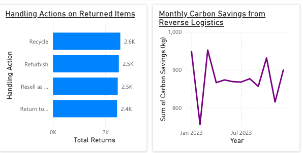
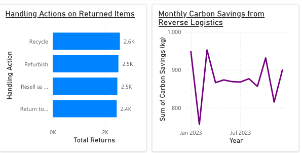

Reverse Logistics Dashboard
Objective: To develop a comprehensive Reverse Logistics Dashboard using Power BI to analyze and visualize key metrics associated with the returns management process. This dashboard helps stakeholders make informed decisions by providing insights into the financial and environmental impacts of reverse logistics operations.
Tools and Technologies Used:
- Power BI Service (Free Version): Utilized for data visualization and dashboard creation.
- Simulated Dataset: Python was employed to create a realistic dataset mimicking reverse logistics operations.
Key Features and Visualizations:
- Monthly Trends in Resale Revenue and Refunds: A line chart comparing monthly revenue from resold items against the refund amounts issued.
- Distribution of Returns by Reason: A pie chart categorizing returns by reasons such as defective products or customer preferences.
- Handling Actions Overview: A bar chart displaying returned item counts based on actions taken.
- Carbon Savings Tracking: A line chart showcasing carbon savings achieved through sustainable reverse logistics practices.
Insights and Impact:
The Reverse Logistics Dashboard revealed key patterns and areas for improvement in the returns management process, such as high return rates for certain categories. It provided actionable data to optimize processing costs, enhance sustainability initiatives, and improve customer satisfaction.
Snapshots of the Dashboard:
 
